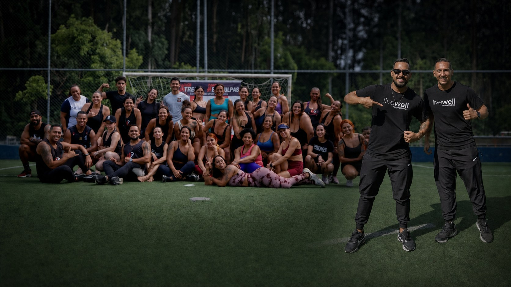

Treino e comunidade
Treino funcional reúne movimento, orientação e comunidade na quadra
Bruno Resende e Rafael Resende conduzem uma manhã de exercícios, acompanhamento profissional e energia coletiva com a BR Assessoria.
Ler reportagem completa